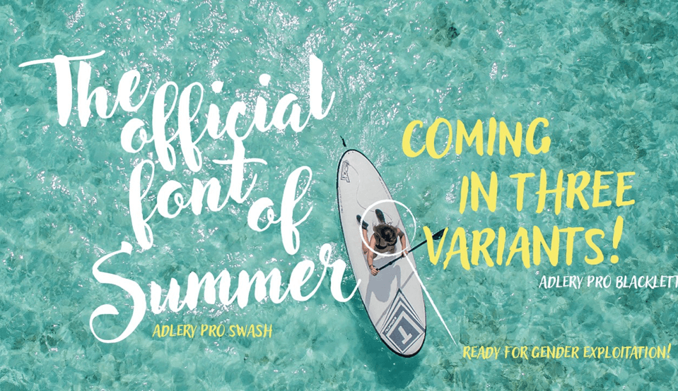
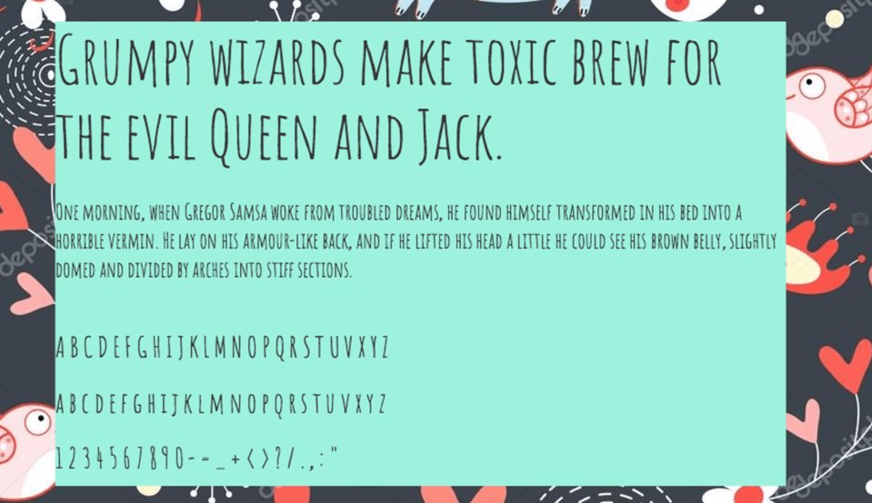
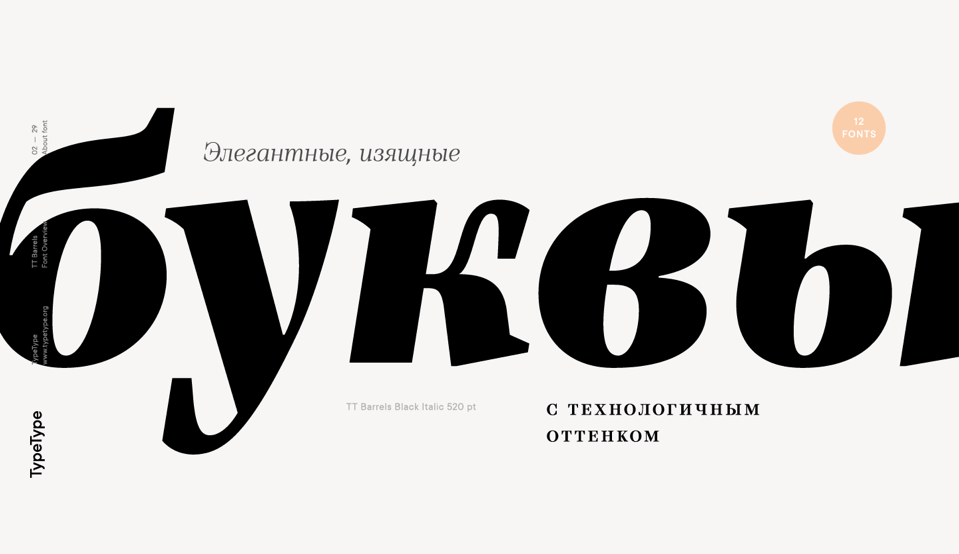
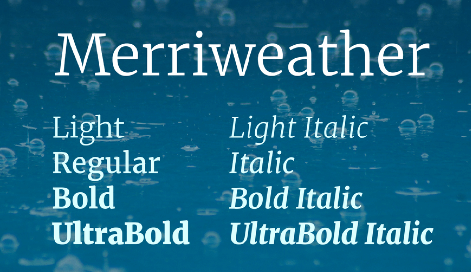

Как подобрать шрифты в зависимости от тематики сайта
Как доказывают научные исследования, шрифты влияют на оценку напечатанной информации. Также эксперименты подтверждают, что для разных тематик оптимальные шрифты на сайт будут отличаться, чтобы вызвать у читателей подходящие ассоциации.
Для корпоративного сайта подойдут традиционные шрифты без засечек, например, Verdana или Aria, ассоциирующиеся со строгим деловым стилем:
Для детских и развлекательных порталов стоит использовать более интересные, легкие и фантазийные шрифты, которые понравятся юной аудитории:
На восприятие читателем текста, помимо шрифта и его размера, влияют цвет, начертание, пробелы между символами и межстрочный интервал, размещение информации по колонкам. Главное, чтобы текст был разборчивым, легко читался как на компьютере, так и с портативных устройств.
Как подобрать шрифт
При выборе шрифта для сайта стоит следовать следующим рекомендациям:
- использовать не более четырех шрифтов на одной странице;
- пользоваться шрифтами без засечек (Sans-serif) для основного текста, так как на экране засечки затрудняют чтение;
- в печатной версии применять шрифты с засечками, поскольку они ассоциируются у читателей с надежностью и респектабельностью;
- для примеров программных кодов, инструкций или имитации машинописного текста использовать шрифты семейства Monospace;
- с помощью нестандартных шрифтов, например, Script и Fantasy, оформлять заголовки и делать акценты для привлечения внимания;
- использовать для заголовков и призывов к действию более крупные размеры, чем обычный текст.
Примеры шрифтов в графическом дизайне
-
Шрифты Craft
Шрифт на сайте — это часть вашего бренда, подумайте сначала о своем бренде выделите основные его качества и свойства.
- На примере — упаковка мороженого, где владельцы хотят подчеркнуть натуральность мороженого. Подходят отлично шрифты с имитацией тиснений букв, каллиграфия, что-то ручное, домашнее, теплое по атмосфере:
- похожий шрифт:
-
Handwritten
Шрифты для бренда, имитирующие ручное написание, делают ощущения от него добрым, открытым и отзывчивым, на примере — корм для собак:
Такие шрифты хороши также для детских тематик и в целом везде, где важно показать заботу и отзывчивость.
Как альтернатива такие шрифты хорошо задают неформальное настроение.
- платный шрифт Adlery Pro:
- 
- бесплатный шрифт Amatic SC:
- 
-
Serif
Шрифты с засечками отлично подойдут, если вы хотите отобразить приверженность к традициям и стабильности компании. С сочетанием яркой графики или цветов, такие шрифты здорово оживляют бренд:
- из платных хорош Barrels:
- 
- из бесплатных — Merriweather:
- 
-
Sans Serif
Открытость, прозрачность, гибкость — все это можно отразить выразительным шрифтом без засечек. Шрифт с жирным начертанием и в сочетании с эмоциональными живыми фотографиями дает ощущение открытости бренда:
- из платных есть современный Gilroy:
- из бесплатных есть Open Sans со множеством начертаний: